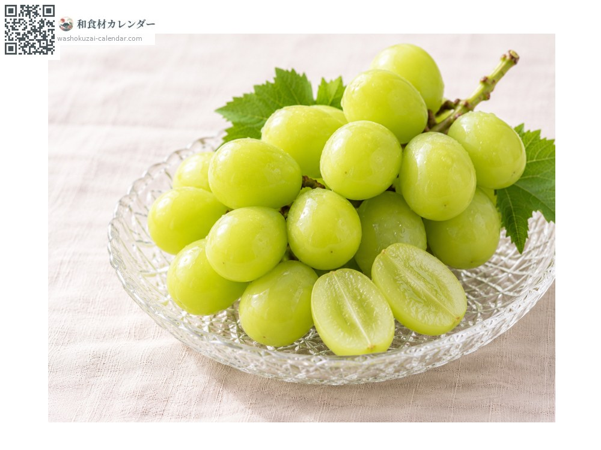
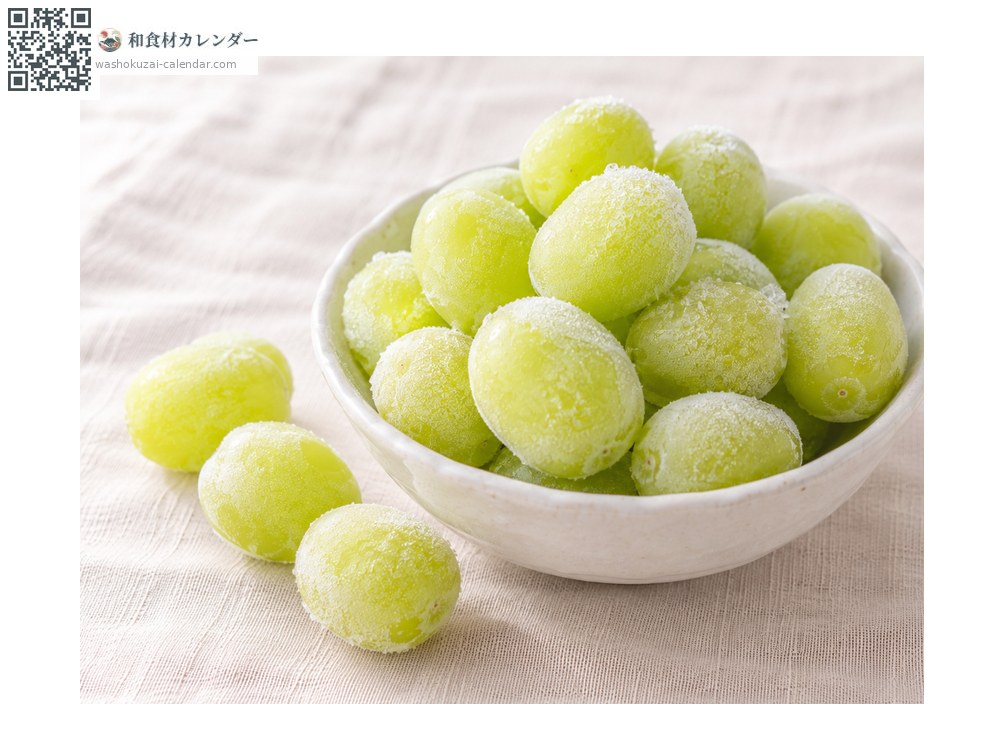
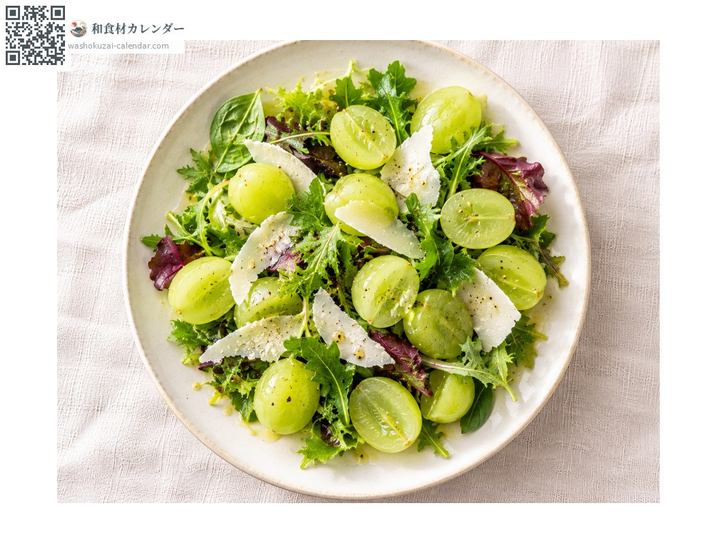
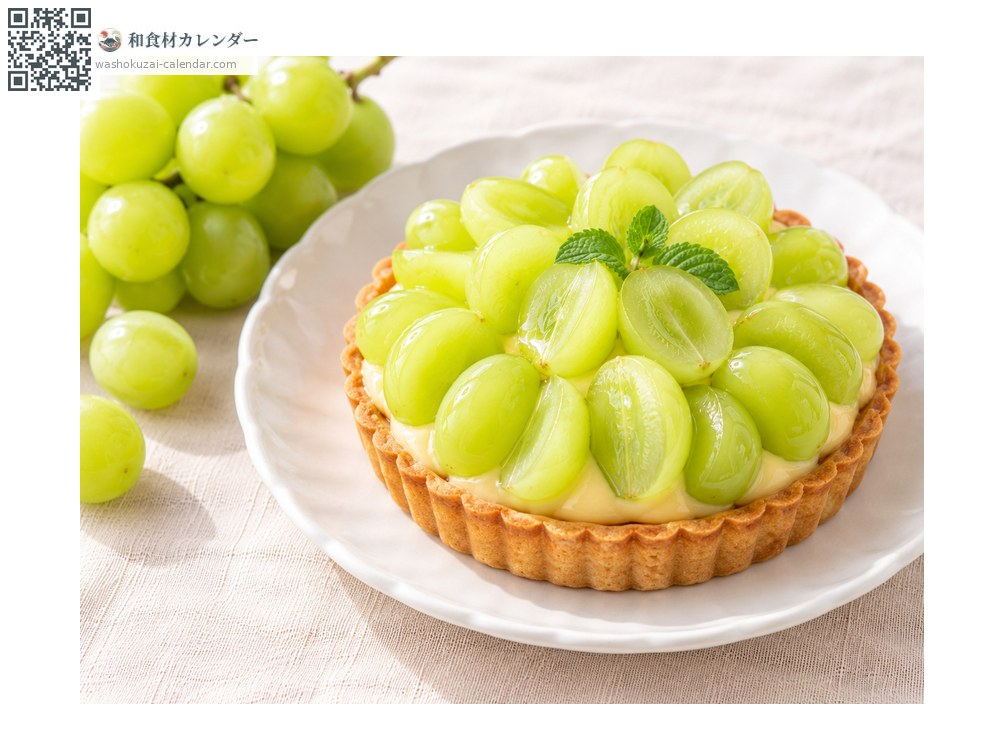

Fruit
Shine Muscat
シャインマスカット しゃいんますかっと
Also known asshain, budo, budou
At its best in Aug, Sep, Oct

When it is at its best
Jan
Feb
Mar
Apr
May
Jun
Jul
Aug
Sep
Oct
Nov
Dec
In seasonAvailable
How to cook

Skin and all
Washed and eaten whole; no seeds and a thin skin.

Frozen
Pulled from the bunch, frozen and eaten half-thawed.

Salad
Halved, with leaves and cheese.

Tart
Halved and laid out; the colour shows beautifully.
How to choose
Plump berries coloured yellow-green on a green stem, not packed too tightly together.
Storage
Bag unwashed and refrigerate. Keep the bunch intact.
Main areas
Good to know
Bred by Japan's National Agriculture and Food Research Organization and registered in 2006. It is seedless, eaten skin and all, and very high in sugar. It was made to carry the scent of a muscat while growing in the Japanese climate, and it is now the country's leading export grape.